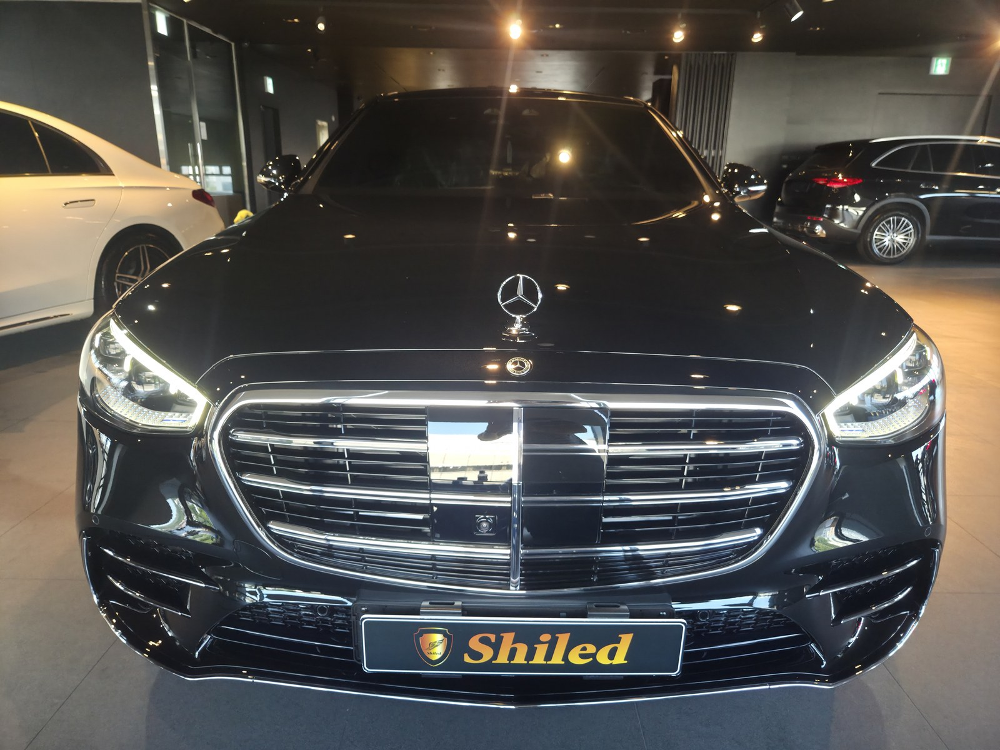
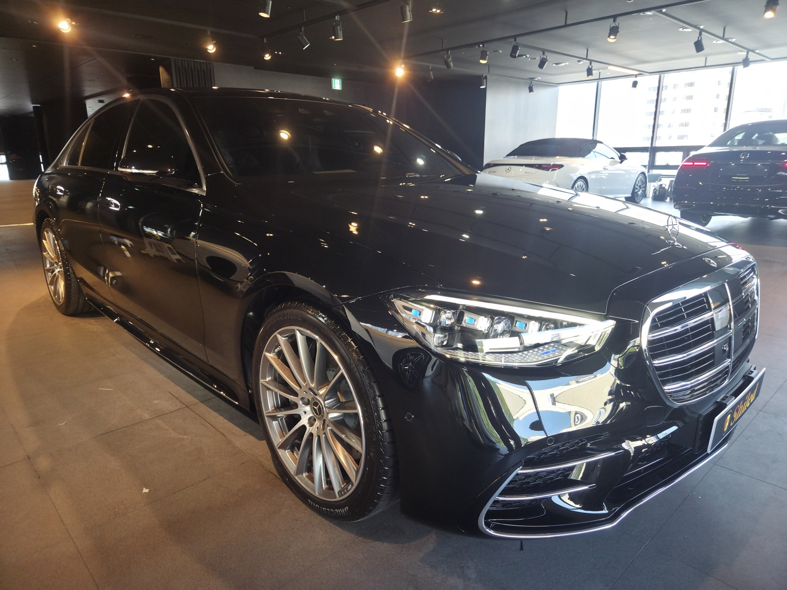
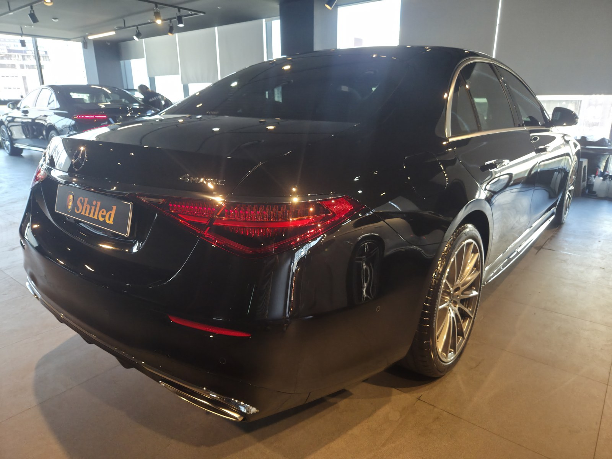
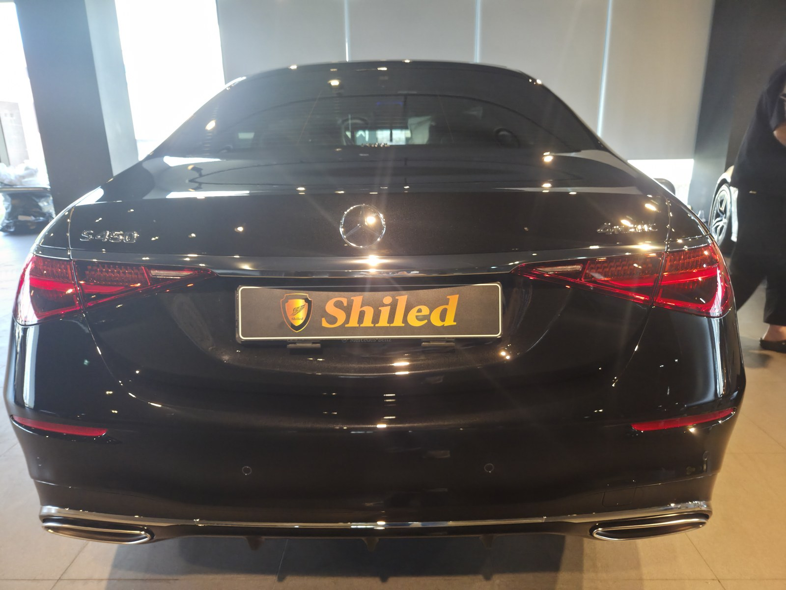
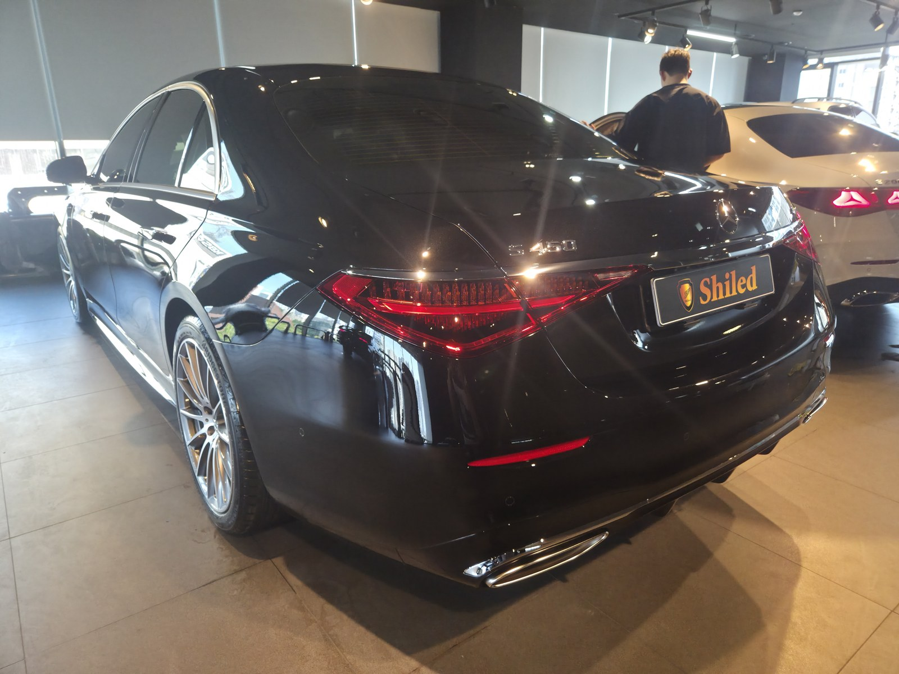
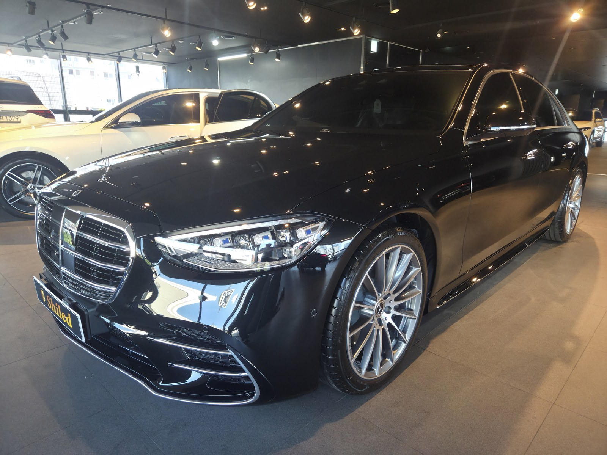
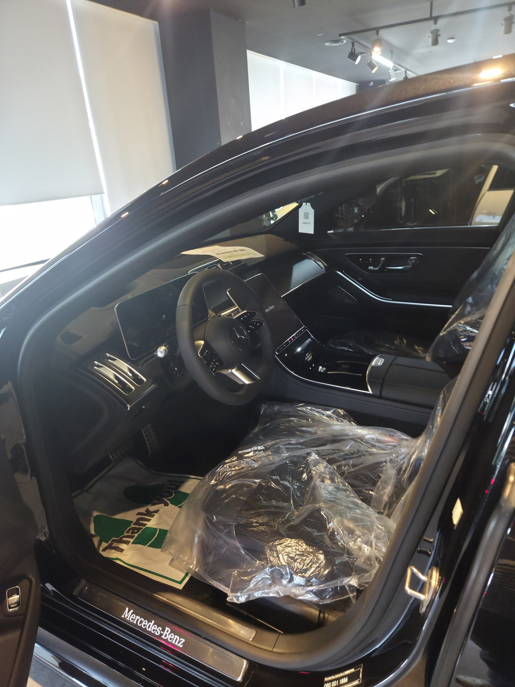
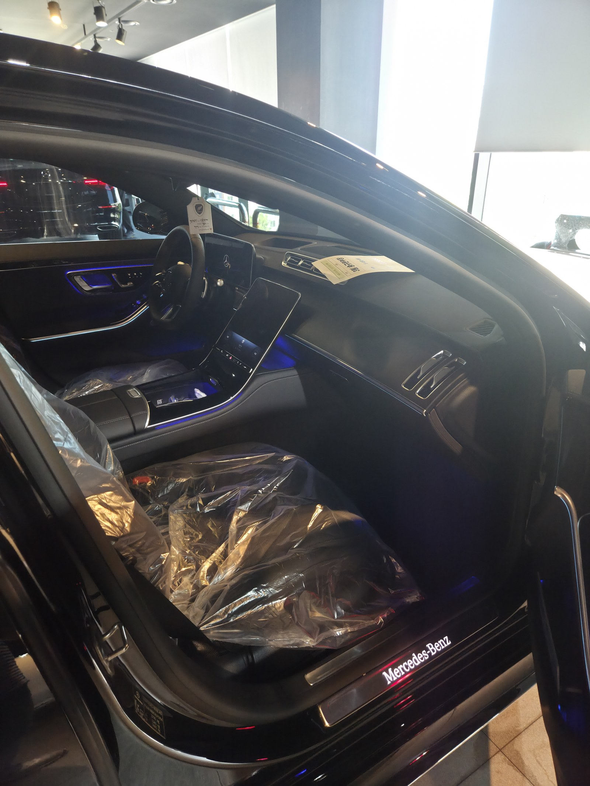
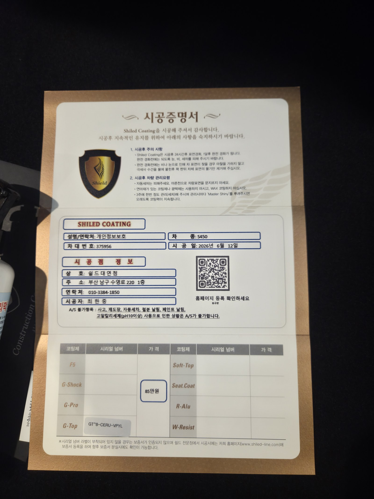

부산 벤츠 신차 유리막코팅으로 만난 S450 블랙입니다. 아직 출고 전, 새 차입니다.
발색보다 관리 편의를 우선한 차주 요청에 맞춰 출고 전 G-TOP 유리막코팅으로 진행했습니다.

S450에 G-TOP을 선택한 이유는 무엇인가요?
G-TOP은 발수·방오성이 가장 강한 코팅입니다.
관리 편의성을 최우선으로 두는 차주에게 권합니다. 세차 주기가 길어져도 오염이 잘 붙지 않고, 물기가 잘 굴러 떨어집니다. 부산 벤츠 신차 유리막코팅 상담에서 바쁜 차주일수록 G-TOP을 선택하는 경우가 많습니다.

G-TOP과 F5는 뭐가 다른가요?
F5는 색감 깊이와 글로시함에 특화된 코팅이고, G-TOP은 발수·방오성에 특화된 코팅입니다.
발색보다 오염 방지와 관리 편의를 우선한다면 G-TOP이 더 잘 맞습니다. 코팅제는 대표가 화학공학 전공으로 직접 개발·제조한 제품입니다.

기술자의 팁
신차라고 바로 코팅을 올리지 않습니다. 운송·보관 중 묻은 미세 오염을 디테일링 세차와 탈지로 걷어낸 뒤에 올립니다. 깨끗한 바탕 위에 올려야 코팅이 제대로 밀착합니다.



실내 상태도 함께 확인합니다
출고 전 차량은 안팎 컨디션을 함께 정리합니다.
실내는 아직 시트에 보호 커버가 씌워진 신차 그대로입니다. 외부 도장은 G-TOP으로 발수막을 올리고, 실내까지 깨끗한 상태로 인도합니다.


시공증명서를 함께 드립니다
모든 시공 차량에 시공증명서를 드립니다.
차종·시공일·코팅제 시리얼 번호가 적혀 있고, 홈페이지에 QR코드로 등록해 보증을 받으실 수 있습니다. 이 차는 G-TOP 코팅으로 기록돼 있습니다.

차종·시공일·코팅제 시리얼이 기재된 시공증명서
자주 묻는 질문
Q. S450에 G-TOP을 추천하는 이유는 무엇인가요?
A. 관리 편의성을 최우선으로 두는 차주에게 권합니다. 발수·방오성이 가장 강해 세차 주기가 길어져도 오염이 잘 붙지 않습니다.
Q. G-TOP과 F5는 뭐가 다른가요?
A. F5는 색감 깊이와 글로시함에, G-TOP은 발수·방오성에 특화됩니다. 관리 편의를 우선한다면 G-TOP이 더 잘 맞습니다.
Q. 시공증명서에는 어떤 정보가 담기나요?
A. 차종, 시공일, 사용한 코팅제와 시리얼 번호가 기재됩니다. 홈페이지에 QR코드로 등록하면 보증 확인이 가능합니다.
Q. 신차코팅도 전처리를 하나요?
A. 합니다. 운송·보관 중 묻은 미세 오염을 디테일링 세차와 탈지로 정리한 뒤 코팅을 올립니다.
Q. 쉴드광택 위치와 예약은 어떻게 하나요?
A. 부산 남구 유엔로220 1F 쉴드광택입니다. 예약·상담은 010-3384-1850, 대표 최한중이 직접 상담하고 책임 시공합니다.
새 차일수록 시작점이 다릅니다. 가장 깨끗할 때 입혀두십시오.
제품을 직접 만드는 사람이 직접 시공합니다.
부산에서 벤츠 신차 유리막코팅을 고민 중이시면 편하게 연락 주십시오.
어떤 차를 타냐보다 어떻게 타냐가 중요합니다~!
📞 010-3384-1850 견적 문의쉴드광택 · 부산 남구 유엔로220 1F · 대표 최한중